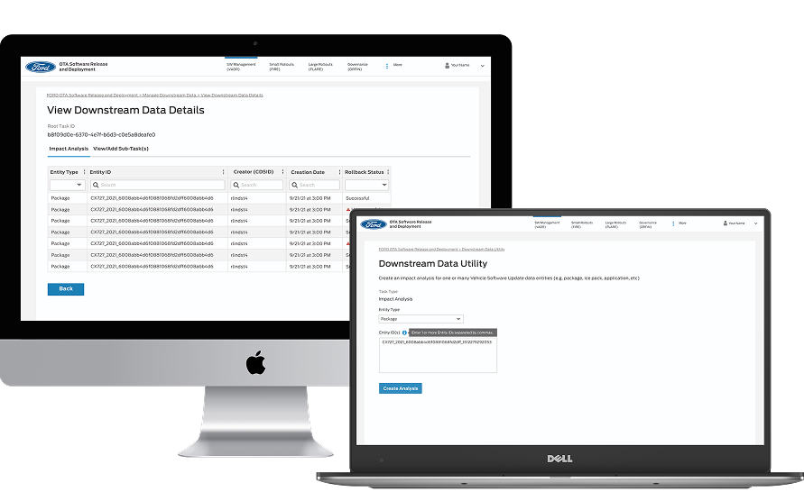
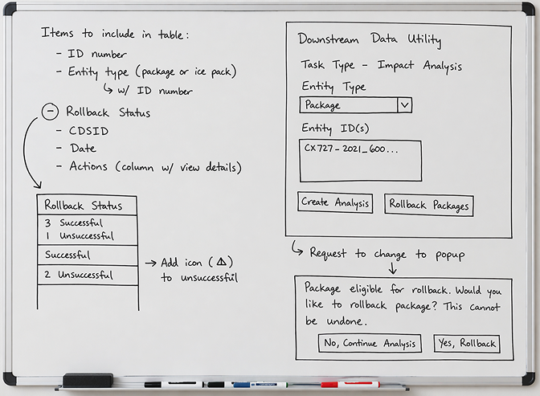
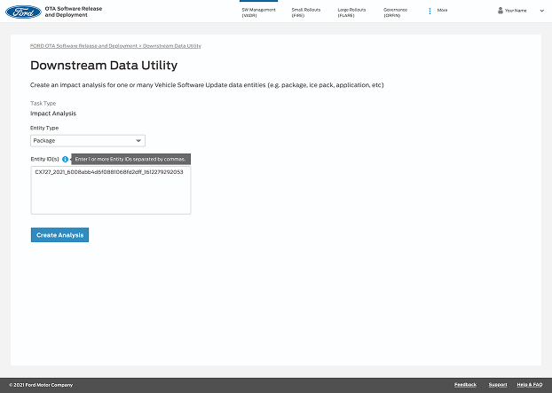
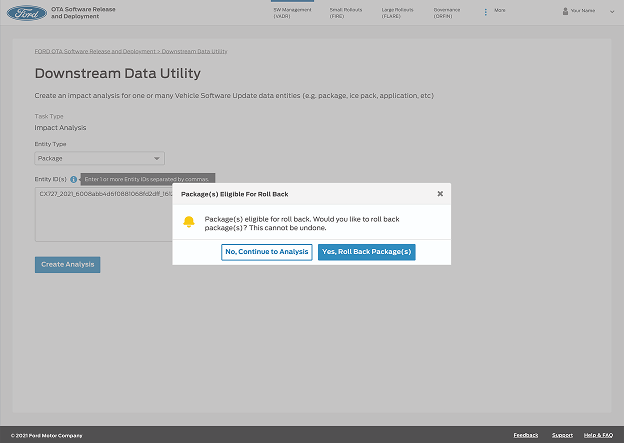
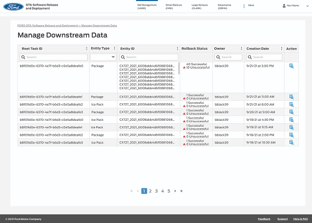
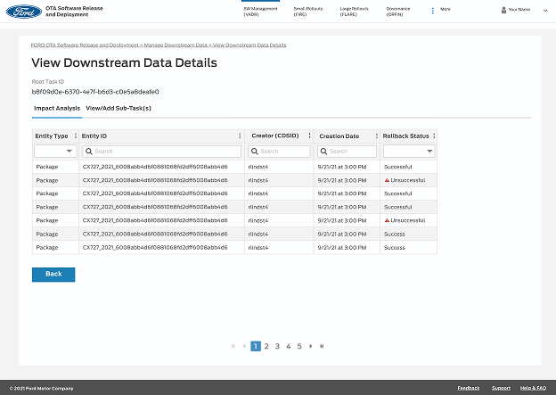

web experience
Ford Motor Company
The Downstream Data Utility is a new feature designed for Ford's internal Over-the-Air (OTA) updates management system. This feature enables engineers to edit or roll back software packages after deployment. Our goal was to design an intuitive interface that simplified complex rollback processes, supported batch operations, and provided clear visibility into system outcomes.

The Challenge
Before this feature was introduced, engineers had no straightforward way to roll back software packages that had already been deployed to vehicles. This limitation created operational challenges:
We needed to design a tool that addressed these pain points while fitting seamlessly into Ford's existing OTA platform.

Research & Discovery
I began by conducting stakeholder interviews and collaborative brainstorming sessions with engineers, product owners, and fellow designers to understand: how rollback processes currently worked, what success and failure scenarios looked like, how we could make the data easily accessible for the engineers.
Reduce the number of steps and enable batch rollbacks
Use Ford's established internal design system to seamlessly blend with the rest of the site
Show rollback success or failure with steps to fix errors
Final Design
The new Downstream Data Utility feature significantly improved the rollback process for Ford's internal OTA engineers by:
The feature became a critical tool within the OTA site, streamlining data management workflows and setting a new internal standard for usability in complex engineering systems.



